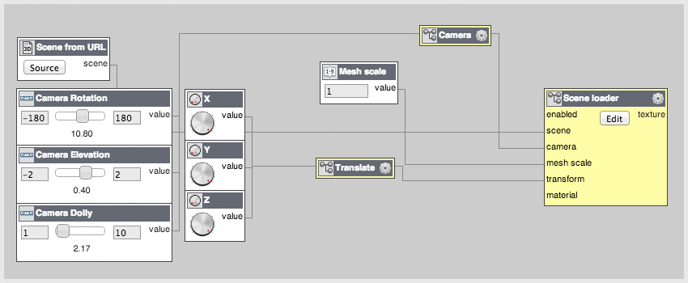

Engi is a dataflow programming editor using HTML5/WebGL
It currently has approximately 200 plugins that you can use to create logic, 3D graphics, cameras, materials, lights etc. You can play video and audio, write custom shaders, and a do a whole lot more. It's written in javascript with high performance and speed in mind. If you want to know more before jumping in, see below or read more in the
introduction. It works in the browser so if you just want to get started, you can use it right here.
Try it now
Engi is open source and licensed under the MIT license. The source code is released at
https://github.com/engijs/engi You can download Engi from github and run it locally on your own computer.
Follow us on twitter
@EngiDevOps or on GitHub.
Example screenshot of a graph:

Editing graphs:
Right click on canvas to insert plugins.
Drag connections from inputs and outputs
Press Play to run your graph.
Hold shift to delete plugins and connections.
Double click to add Snippets.
Click and drag on the canvas to select plugins.
Collapse plugins by clicking on their icon.
|
Hotkeys:
CTRL-C, CTRL-V, CTRL-X Copy, Paste, Cut
CTRL-A Select all
CTRL-B Hide/show Graph tree and info view
CTRL-L Hide/show console.
Space Play/Stop
|